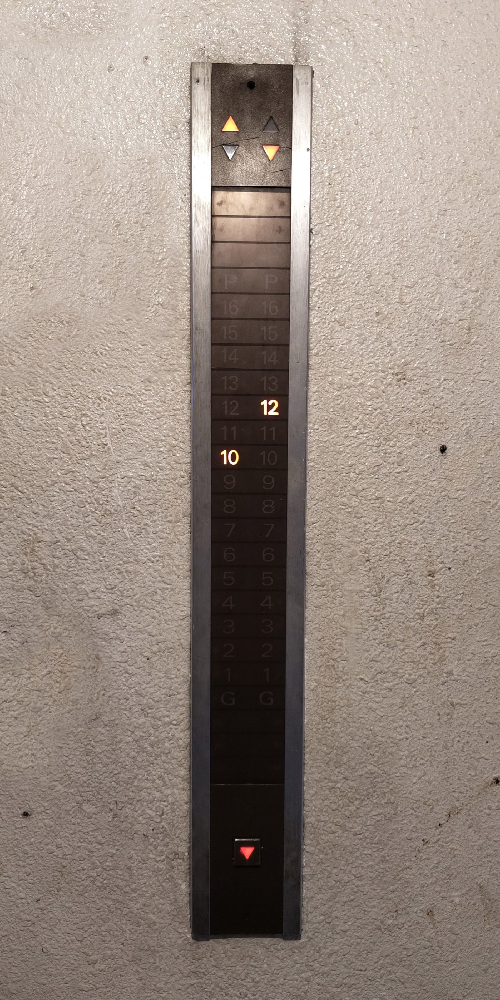
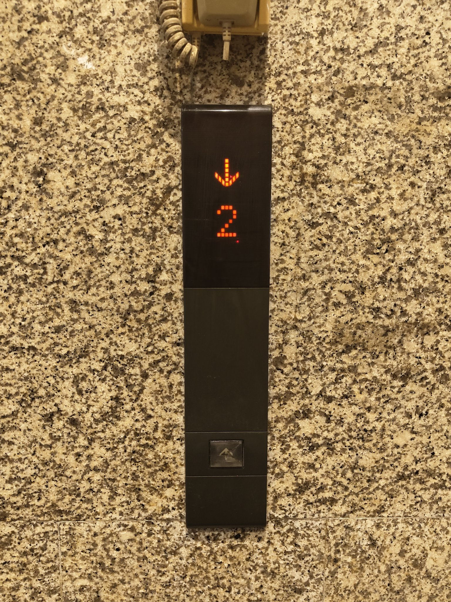
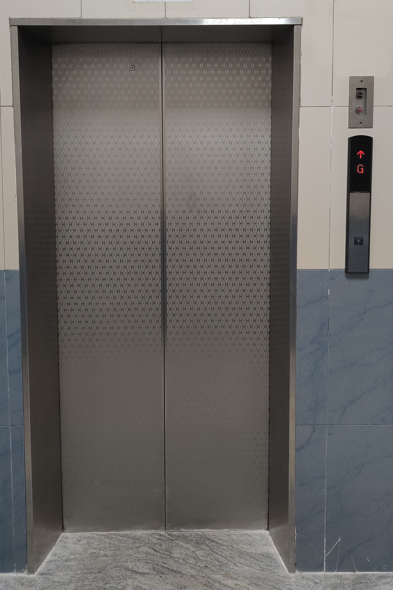

Mitsubishi continued the production of their SP- and MP-VF series of lifts until the late 90s.
| 1990s Mitsubishi SP-VFs in a duplex setup. | Top floor hall call station and direction indicator in a duplex setup. |
|
Main floor hall call station;
with standard-issue analogue position indicators. |
|
| Car interior of a 1990s Mitsubishi SP-VF. | |

|
|
| Car station. |

|

|
| Old-style analogue hall position indicators mounted on the transom panel. | Main floor hall call station. |

|
|
| A set of three high-rise Mitsubishi SP-VF lifts. | Interior of a high-rise Mitsubishi SP-VF. |
|  | |
|
Simplex hall station for a high-rise SP-VF.
With the single column of floors, the hall station appears unusually tall. |
Duplex hall station for a high-rise SP-VF. |
| Car station. This particular lift goes up 17 floors at a speed of 1.5 m/s. |
Even though an SP-VF made in the 1990s appears at first glance no different from one made in the 1980s, one can identify (most) 1990s SP-VF from a 1980s Mitsubishi from looking at certain details on the capacity plaque. See the below infographic for details.

In the early 1990s, Mitsubishi introduced the GPS and GPM models, for low/mid-rise and high-rise buildings, respectively.
The GPS and GPM was a major redesign from the SP-VF.
Apart from changes to the mechanics and the controller, for the first time, dot matrix LED displays were introduced, and came as standard.
Aside from that; the car and landing panels have been totally revamped from previous variants.
The buttons were now bigger and more rectangular; plus its typeface was changed from Univers to Helvetica.
Another major change is the introduction of voice announcements as an optional feature; available with the following options:
"Transitional phase" fixtures
Some Mitsubishi GPS lifts continued to use the rare "Series 1" stainless-steel panel style for the car station.
These fixtures still used the SP-VF style of buttons, as well as the Univers typeface is still used for the buttons as well as the capacity text.
However, the indicator is a LED dot-matrix display as opposed to a segmented display. As well as that, the hall fixtures are same as those used on the GPS models.
Hence, this guide refers to these fixtures as well as the lifts using them, unofficially, as the "Transitional phase",
as they combine both old and new elements from the SP-VF and GPS eras, respectively.
| Exterior of a shaft-less scenic Mitsubishi GPS lift. | |
| Hall position indicator positioned above the landing. | Intermediate floor hall call station. |
|
Car station. Notice how it resembles an Otis Series 1-style car station, with the angled indicator. |
|
| The LED dot matrix display, along with an VFD scrolling information display. |
Close-up of the buttons. These are the same type as found on the SP-VF.
As such, these buttons use the Univers font; which also is used on the capacity text as shown above. |
| Mitsubishi GPS in a duplex setup. | Flush-mounted simplex hall station. | Flush-mounted duplex hall station. |
| Hall position indicator built into the transom panel. | Hall station. | |

|
||
| Car interior of an high-rise Mitsubishi GPS lift. | ||
| Car station. |
|  | |
| Simplex hall station. | Duplex hall station. |
| Car interiors. |

|
Car panel. |
The GPS-III and GPM-III (for low/mid rise and high-rise, respectively.), introduced in the late 1990s; was an improvement over the original GPS and its variants.
With the GPS- and GPM-III series; electronic chimes were now a standard issue; deprecating the old mechanical bell chimes.
The fixtures too got some changes; the buttons now are square as opposed to rectangular on the original GPS; coupled with an increase in the font size.
As well as that; the car station and hall station too got design changes from the original GPS.
For high-rise lifts; a smaller variant of the buttons had been introduced as well.
Like its predecessor, the car station had been available in stainless steel as well as dark grey plastic variants.
| Landing position indicator on the transom panel. | Flush-mounted hall call station with a LED dot-matrix position indicator. | Flush-mounted main floor hall call station. |

|
||
|
Intermediate surface-mounted hall call station of a Mitsubishi NexWay. This one uses the older GPS-III style buttons. |
Hall lanterns mounted above the landing. The down arrow is currently lit. | |
| Car interior of a GPS-III. |
| Car station. |
Car panel of a high-rise Mitsubishi GPM-III.
This uses the smaller button variant often found on high-rise lifts. This lift goes around 2.5 m/s, a bit slow for the 35 floors it goes up above ground. |

|
|
| Duplex surface-mounted hall call station with position indicators. | |

|
|
| A set of 4 GPS-IIIs. | Car interior. |

|
|
|
Interior of a high-rise GPS-III.
This lift goes around 2 m/s, going up around 20 floors. |
|
|  | |
| Exterior of an GPS-III in a simplex setup. | Car station of a GPS-III. This one uses the black plastic style. |